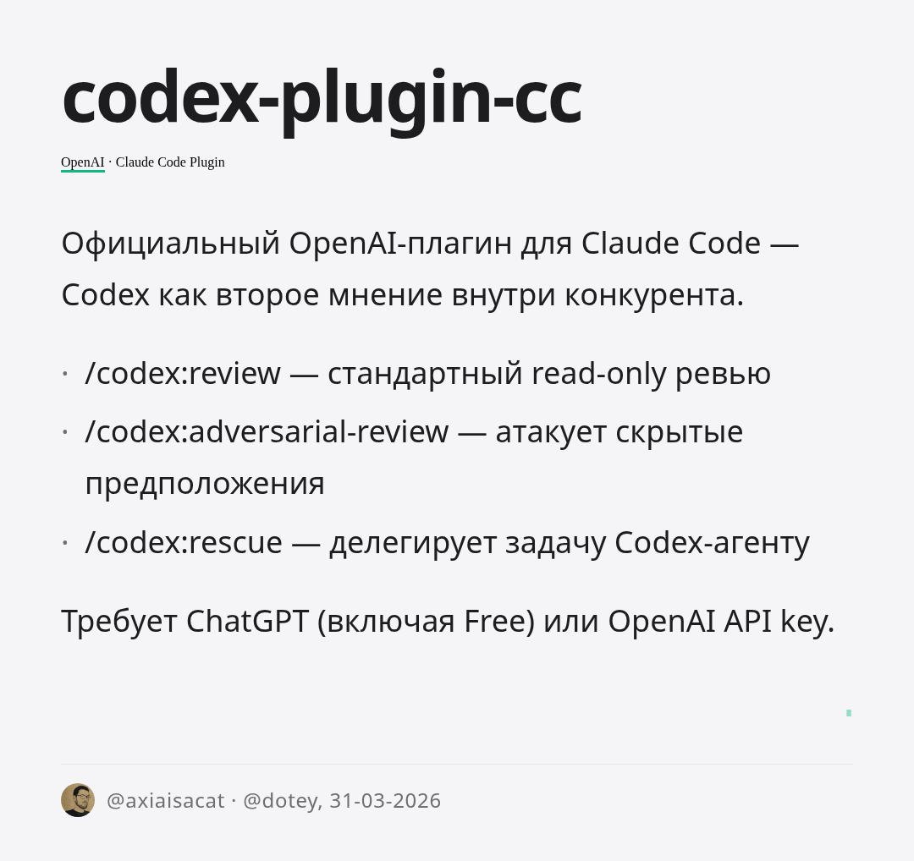

codex-plugin-cc
Тип: Claude Code Plugin
Автор: OpenAI (официальный)
Установка: /plugin marketplace add openai/codex-plugin-cc
Источник: @axiaisacat, @dotey, 31-03-2026
Официальный плагин OpenAI для Claude Code — Codex как «второе мнение» прямо в рабочем процессе конкурента.
Команды:
- /codex:review — стандартный read-only code review
- /codex:adversarial-review — атакует скрытые предположения (race conditions, security, auth)
- /codex:rescue — делегирует задачу Codex-суб-агенту при зависании
- /codex:setup — включение review gate (блокирует Claude до завершения проверки)
- /codex:status / /codex:cancel / /codex:result — управление задачами
Требования: ChatGPT-подписка (включая Free) или OpenAI API key + Node.js 18.18+
Примечание: Все задачи работают в фоновом режиме. Review gate может вызвать цикл двух агентов.